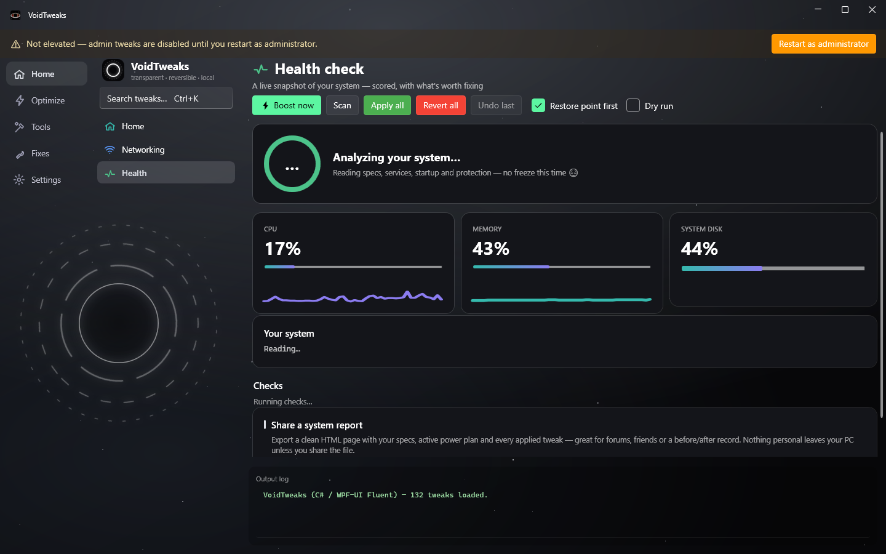
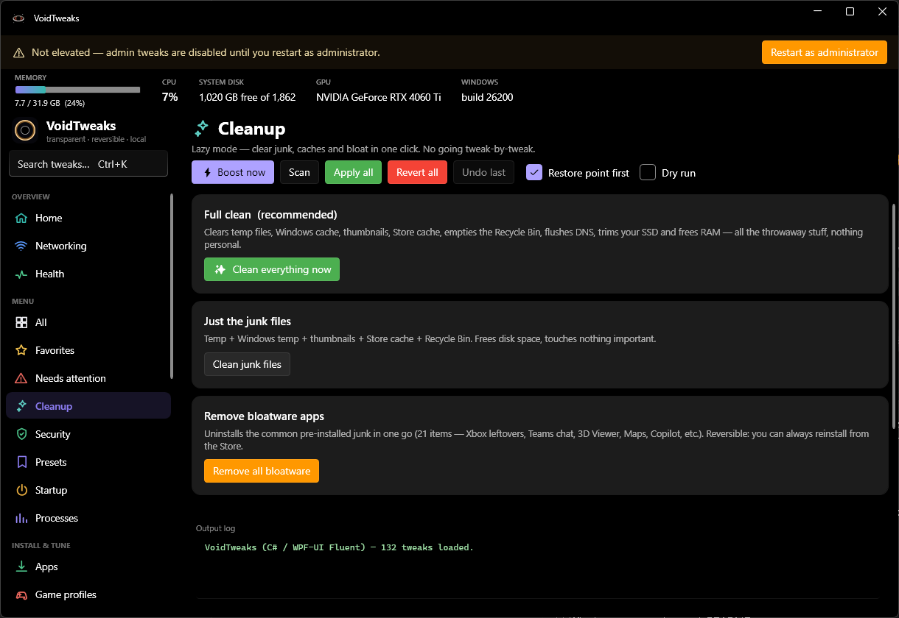

Your Windows,
unlocked.
A free, open and fully-reversible Windows 11 optimizer. Every tweak in plain language, nothing phones home, one-click revert on almost everything.
Not another closed-box "optimizer"
Most PC optimizers hide what they change, nag you to pay, and sometimes leave your system worse. VoidTweaks is the opposite.
Fully transparent
Every tweak's exact commands live in tweaks.json and show in a tooltip. No hidden actions.
Reversible
Almost everything is a toggle — apply and revert in one click. A restore point is offered before changes.
100% local
No telemetry, no accounts. It only touches the network when you run a test or check for an update.
Free & open
MIT licensed. No paywall, no "Pro" upsell, no feature held hostage.
Self-contained
One .exe. .NET is not required on the target PC.
Deep but safe
Performance, privacy, network, gaming and BIOS guidance — with risk levels and warnings on the scary stuff.
See it. Change it. Revert it.
A clean three-pane layout — icon rail → category → content. Each tweak card glows green when applied, red when not, shows its risk level, and reveals the exact commands it runs.
How it works →
Know your PC. Clean it in one click.
A scored 0–100 health snapshot with live gauges and real checks. Then Clean everything — temp, caches, Recycle Bin, DNS flush, SSD trim and RAM free — in a single click.
Cleanup & Boost →
Apply a dozen tweaks without waiting.
Clicks queue and run one after another — no "busy, wait" blocking. A live badge shows what's pending, and Undo covers the whole batch. A restore point is taken first.
The queue →
142 tweaks, grouped by purpose
⚡ Performance & Gaming
Power plans, latency tweaks, game profiles, a CPU/GPU stress test and plain-English overclock guidance.
🛡️ Privacy & Debloat
Kill telemetry, remove pre-installed junk in one go (reversible from the Store).
🌐 Network
DNS benchmark, region-tuned advice, Wi-Fi stress test with jitter & packet loss.
🧹 Cleanup & Boost
Temp, caches, Recycle Bin, DNS flush, SSD trim and RAM free — in one click.
🧰 Tools
Restore points, startup & process managers, winget installer, presets, system report export.
🧬 BIOS & Firmware
Reads your UEFI, checks Secure Boot / TPM, safe tuning steps, reboots into setup.
Ready to tune your PC?
Free, open-source, and reversible. Keep "Restore point first" on, apply what you understand.